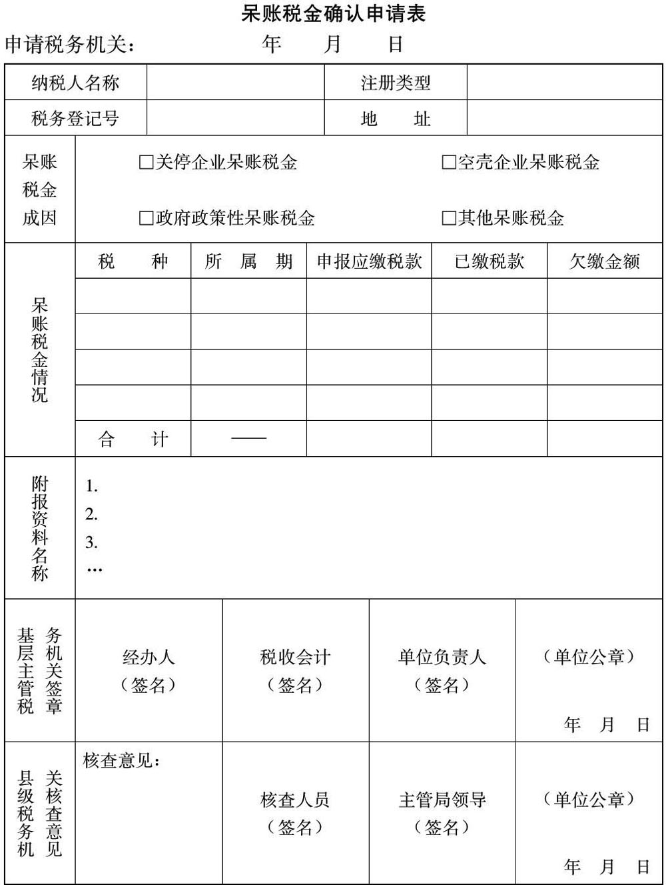
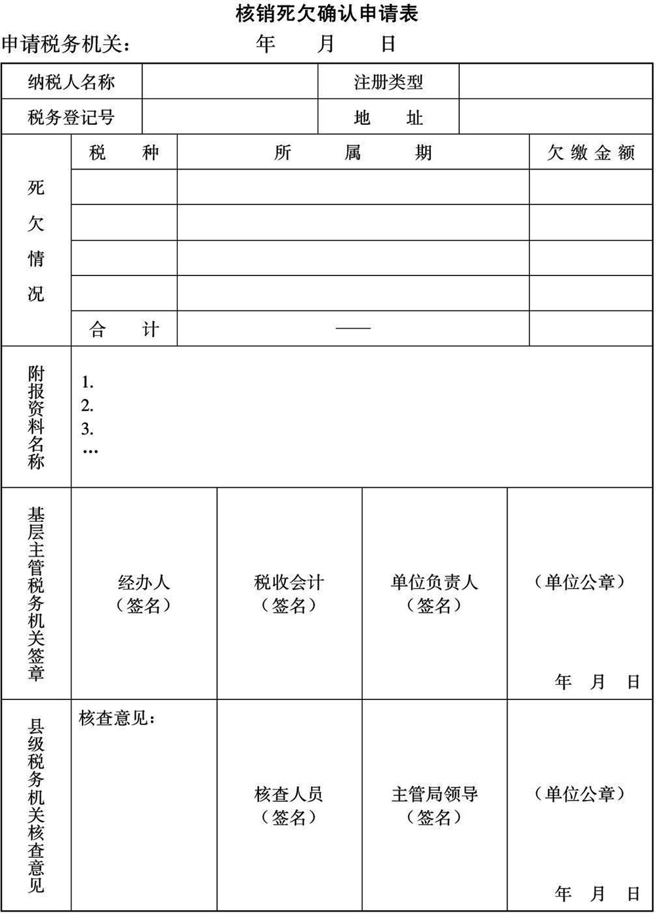

国家税务总局
关于印发《欠缴税金核算管理暂行办法》的通知
国税发〔2000〕193号
各省、自治区、直辖市和计划单列市国家税务局、地方税务局：
现行的税收会计欠缴税金核算方法施行2年来，对如实反映和有效清理欠缴税金起到了较大的促进作用，但随着经济体制改革的深入和市场经济的发展，欠缴税金成因日趋复杂，仅按发生时间对欠缴税金进行分类核算管理已不能满足税收工作发展的要求，迫切需要按各种成因分类核算和监控、清缴欠缴税金。为此，国家税务总局制定了《欠缴税金核算管理暂行办法》，现印发给你们，请遵照执行。
为确保新的欠缴税金核算管理办法的顺利实施，各级税务机关必须按本办法规定的分类要求，于2001年3月底前将2000年底前已发生的欠缴税金全部确认和核算完毕。在编报2001年前3个月的税收会计报表时，已确认类别的欠缴税金，按新的类别反映；尚未确认类别的3年以上欠税，暂反映在“其他呆账税金”栏；尚未确认类别的3年以内欠税，仍分别反映在“往年陈欠”和“本年新欠”栏。在编报2001年4月份的税收会计报表时，2000年前和2001年前3个月的欠缴税金必须全部按本办法规定的分类要求反映。
附：欠缴税金核算管理暂行办法
国家税务总局
2000.11.28
附：
欠缴税金核算管理暂行办法
第一章 总则
第一条 为了如实核算反映欠缴税金情况，严密监控和有效清缴欠缴税金，加强组织收入工作和税收征管工作，特制定本办法。
第二条 本办法所称的欠缴税金是指税务机关负责征收的应缴未缴的各项收入，包括呆账税金、往年陈欠、本年新欠、未到限缴日期的未缴税款、缓征税款和应缴未缴滞纳金。
第三条 各级税务机关必须严格按《税收会计制度》和本办法的规定，对欠缴税金及时、如实地进行分类确认、核算和反映，不得弄虚作假、不得隐瞒。
第四条 对于已发生的呆账税金、往年陈欠和本年新欠，各征收单位必须严格按《税收征管法》的规定计收滞纳金，严密监控管理，并根据纳税人的生产经营变化情况及时进行追缴。
第五条 欠缴税金的分类确认工作由各税务机关的税政主管部门或征管部门负责，监控和追缴工作由征管和稽查部门负责，核算反映工作由计会部门负责。各部门必须密切配合，切实加强欠缴税金的管理。
第二章 欠缴税金的核算
第六条 各会计核算单位都必须在“待清理呆账税金”总账科目下，增设“关停企业呆账税金”、“空壳企业呆账税金”、“政府政策性呆账税金”、“其他呆账税金”四类明细科目，详细核算反映所有的关停企业、空壳企业和政府政策原因造成的欠缴税金及所有三年以上的欠缴税金情况。各类呆账税金的具体核算范围如下：
（一）“关停企业呆账税金”，指因国家产业调整、企业改制等政策要求被依法破产关闭，因违反国家法律、法规规定被依法责令关闭，以及因自行解散而关闭，已正式公告破产、撤销、解散，但尚未依法终止其法人资格的企业（包括企业、事业单位和社会团体，以下同），经追缴仍未清回的欠缴税金；已连续停止生产经营一年（按日历日期计算）以上，但未公告破产、撤销、解散的资不抵债的企业，以及按税收征管制度规定转入“非正常户”管理的失踪纳税人，经追缴仍未清回的欠缴税金。
（二）“空壳企业呆账税金”，指原企业仍然存在，而其主要资产在兼并、重组、出售等改组时已归属新设企业或其他企业，但改组时按企业资产和债务分配情况，依法仍须由原企业承担的欠缴税金。改组时已分配给新设或其他企业的欠缴税金，应转入承担欠缴税金的企业核算，不再列为原企业的欠缴税金。
（三）“政府政策性呆账税金”，指1994年税制改革前后，县以上政府对部分国有企业实行投入产出总承包，承包企业完成政府规定的应缴财政收入后，拖欠未缴的超基数税款，以及在“以税还贷”政策实行期间，经政府有关部门批准可以用税收归还的贷款，因后来停止执行“以税还贷”政策而造成企业还贷困难，从而拖欠原来用以还贷的税款，经追缴仍未清回的欠缴税金。
（四）“其他呆账税金”，指除上述关停、空壳、政府政策性呆账税金外，其他超过三年（按日历日期计算）仍未清回的欠缴税金。
第七条 除入库单位外，其他各会计核算单位都必须在“待征”类总账科目下，增设“未到期应缴税款”、“缓征税款”、“往年陈欠”、“本年新欠”四类明细科目，详细核算反映待征税金构成情况。各类待征税金的具体核算范围如下：
（一）“未到期应缴税款”，指纳税人已申报或税务机关已作出补税处罚决定，但未到税款限缴日期的应缴未缴税款及罚款。
（二）“缓征税款”，指按规定经批准延期缴纳的税款。
（三）“往年陈欠”，指除呆账税金、未到期应缴税款、缓征税款和本年新欠外，不足三年的欠缴税金。
（四）“本年新欠”，指除呆账税金、未到期应缴税款、缓征税款外，本年发生的欠缴税金。
第八条 各会计核算单位都必须在“损失税金核销”总账科目下，增设“核销死欠”明细科目，核算反映纳税人发生破产、撤销情形，经过法定清算，被国家主管机关依法注销或吊销其法人资格，纳税人已消亡，税务机关依照法律法规规定，根据法院判决书或法定清算报告核销的欠缴税金及滞纳金。
第九条 为统一规范应缴未缴滞纳金的核算管理，所有未缴的呆账税金、往年陈欠和本年新欠的应缴未缴滞纳金都必须实行“账外核算”，进行专项反映，不再纳入应征数核算反映（已征收的滞纳金和核销死欠的滞纳金必须列入应征数核算）。具体核算方法如下：
除入库单位外，其他各会计核算单位都必须在会计账目之外，单独设置“应缴未缴滞纳金登记簿”，分户登记每笔未缴呆账税金、往年陈欠和本年新欠的发生、变化情况，并根据每笔滞纳税款的滞纳时间及滞纳金额定期计算反映其应缴未缴的滞纳金。
第三章 呆账税金和核销死欠的确认
第十条 对申请转为呆账税金的欠缴税金，必须按每个纳税人分别报地市级税务机关进行确认；对申请核销的死欠税款，必须按每个纳税人分别报省级税务机关进行确认。
已确认过关停、空壳两类呆账税金的企业，确认以后又发生的符合此两类呆账税金范围的欠缴税金，如果其成因与该企业前次确认的呆账税金成因相同，可直接报县级税务机关确认；如果成因与前次确认的呆账税金成因不同，仍必须报地市级税务机关确认。
第十一条 所有转为呆账税金的欠缴税金和核销的死欠税款，都必须按以下程序办理确认手续。
（一）申请确认呆账税金和核销死欠必须由基层主管税务机关填报“呆账税金确认申请表”（格式见附件一）或“核销死欠确认申请表”（格式见附件二），并按以下要求附报有关申请材料（申请材料必须一式两份：一份逐级报确认机关，并由确认机关负责确认工作的主管部门留存；一份报县级税务机关，待确认机关核准后再退回基层主管税务机关）：
1.关停企业呆账税金应附报政府有关部门通知或责令企业关闭的文件，企业自行解散的公告文件，企业停业开始月份和满一年时当月的资产负债表及企业填报的停业情况说明，基层主管税务机关对失踪纳税人的核查材料，以及欠缴税金所属期的纳税申报表（或查补税款处理决定书）等材料原件或复印件。
2.空壳企业呆账税金应附报企业兼并、重组、出售协议、企业改组时编制的资产负债表或资产债务评估报告、以及欠缴税金所属期的纳税申报表（或查补税款处理决定书）等材料原件或复印件。
3.政府政策性呆账税金应附报政府与企业签订的承包协议，企业贷款合同和以税还贷批准文件及欠缴税金发生当月的资产负债表，以及欠缴税金所属期的纳税申报表等材料原件或复印件。
4.其他呆账税金应附报欠缴税金发生当月的资产负债表、以及欠缴税金所属期的纳税申报表（或查补税款处理决定书）复印件。
5.核销死欠应附报法院判决书或法定清算报告复印件。
2001年1月1日前发生的呆账税金，确认时要求附报的有关证明文件、企业财务报表和纳税申报表等原始材料确实无法取得的，可由基层主管税务机关填报详细的呆账税金核查材料（详细说明呆账税金的发生事由、时间和金额）代替，但2001年1月1日以后发生的呆账税金，确认时必须严格按上述规定附报原始材料，一律不得再用核查材料代替。
（二）县级税务机关对基层主管税务机关上报的呆账税金和核销死欠确认申请，都必须进行实地调查核实，核实后按规定的权限上报核准。
（三）负责确认的税务机关对核准的呆账税金和核销死欠，要及时向申请的税务机关下达书面的“呆账税金确认通知书”或“核销死欠确认通知书”（格式各地自定，一式四份，确认机关负责确认工作的主管部门、县级税务机关税收会计、基层主管税务机关税收会计和征管部门各留一份）。
第四章 欠缴税金的管理及清缴
第十二条 对于已确认的呆账税金和核销死欠，确认机关负责确认工作的主管部门必须建立备案底册（格式见附件三），并根据确认通知书序时、逐笔登记反映。
第十三条 县及县级以下税务机关对于已确认的呆账税金和核销死欠，必须按以下要求装订和保管有关原始材料：
县级税务机关和基层主管税务机关必须将“呆账税金确认申请表”或“核销死欠确认申请表”与相应的“呆账税金确认通知书”或“核销死欠确认通知书”装订一起，分别作为县级和基层主管税务机关的税收会计核算凭证，并按会计档案要求保存备查。
基层主管税务机关必须将“呆账税金确认通知书”或“核销死欠确认通知书”与相应的“呆账税金确认申请表”或“核销死欠确认申请表”及全部申请确认材料装订一起，作为户籍征管档案资料保存备查。
第十四条 对于已发生关停、空壳呆账税金的企业，各基层主管税务机关应及时清缴其结存的各种发票，并停止供应发票。企业需要填开发票的，应先将开票收入应纳的税款缴纳后再由税务机关代开发票，以防发生新的欠缴税金。
第十五条 对于已发生欠缴税金的企业，各级税务机关要随时监控反映其变化情况，并全力清缴其欠缴税金。
（一）对于已发生呆账税金的关停和空壳企业，后因实行合资、合作、合并、租赁、承包等各种原因又恢复生产经营，原资产和债务未被分割的，如该企业的呆账税金已超过三年，应按“其他呆账税金”重新进行确认；如未超过三年，应及时将其转为“往年陈欠”。并且主管税务机关应根据其税源变化情况，及时制定清缴计划和落实清缴责任。
（二）对于实施兼并、重组、出售等改组的企业，主管税务机关应依法清算并追缴其欠缴的税金及滞纳金。改组时发生债随资走的，应及时根据企业资产和债务分配情况，落实清缴责任，将未清缴的欠缴税金及滞纳金转入应承担清缴义务的企业进行核算和管理。改组后企业承担的欠缴税金符合呆账税金范围的，应按本办法规定的要求报请确认。
（三）对于宣告破产、撤销、解散而准备进行资产、债务清算的企业，主管税务机关应及时向负责清算的机构提出欠缴税金及滞纳金的清偿要求，并按法律法规规定的清偿顺序依法追缴。对于破产、撤销企业经过法定清算后，已被国家主管机关依法注销或吊销其法人资格，纳税人已消亡的，其无法追缴的欠缴税金及滞纳金，应及时依照法律法规规定，根据法院的判决书或法定清算报告报省级税务机关确认核销。
（四）除上述情况外，企业发生其他变化情况而造成已确认的呆账税金成因发生变化的，也必须按规定的呆账税金确认程序重新上报确认机关核准。
第十六条 各基层税务机关清缴呆账税金、往年陈欠和本年新欠时，应同时加收其滞纳金。不能单收欠缴税款，而不收其相应的滞纳金；也不能单收滞纳金，而不收其相应的欠缴税款。【依据《关于税收征管若干事项的公告》（国家税务总局公告2019年第48号）于2020.03.01废止】
第五章 欠缴税金的考核
第十七条 各级税务机关每年都应根据本地区“往年陈欠”、“本年新欠”和“其他呆账税金”的实际情况，分类制定清欠目标，将其列入组织收入工作和税收征管工作考核的一项主要指标。对于已完成清欠目标，但因税源缺乏没有完成收入任务的，可根据实际情况予以调减收入任务；对于既无不可抗力等特殊因素影响，又没有完成清欠目标的单位，要相应调增其下年收入任务和清欠目标。
第十八条 对于未列入清欠目标的其他各类呆账税金和缓征税款，应列入各有关税务机关的岗位责任制内容进行考核，以加强确认、核算、监控和追缴等各项工作的责任。
第六章 违规处理
第十九条 凡是未如实核算和上报欠缴税金的，不论查出部门、发生原因、所属时期如何，均属于“隐瞒欠缴税金”行为，一律按隐瞒数追加该单位的当年或下年收入任务。
第二十条 凡未按规定的权限和确认程序报经确认而擅自将欠缴税金转入呆账税金和死欠核算的，或将不符合各类呆账税金和核销死欠范围的欠缴税金确认为呆账税金和死欠核销的，填报虚假材料以及确认材料不全、手续不齐和未按规定要求装订保存申请确认材料的，均按第十九条规定视同为“隐瞒欠缴税金”行为，按违规确认的呆账税金和死欠数额追加该单位的收入任务。
第二十一条 凡为了调节收入进度或减少欠缴税金而违规办理退税、减免税和缓征税款的，均按第十九条规定视同为“隐瞒欠缴税金”行为，按违规数额追加该单位的收入任务。
第二十二条 发生第十九条、第二十条和第二十一条违规行为的，除追加该单位的收入任务外，要严格按有关规定追究单位领导和有关责任人的责任。
第七章 附则
第二十三条 各省、自治区、直辖市和计划单列市国家税务局和地方税务局应根据本办法制定本地区的具体实施办法。
第二十四条 本办法由国家税务总局解释。
第二十五条 本办法从2001年1月1日起施行，此前有关规定与本办法不符的，均按本办法执行。
附件：
1.呆账税金确认申请表
2.核销死欠确认申请表
3.呆账税金和核销死欠备案底册
附件1：
|

|
注：
1.所属期按申报表所属期填列。
2.本申请表一式四份。一份附申请材料报确认机关；其余三份待确认同意后，分别作为县级和基层税务机关税收会计凭证及基层税务机关的户管资料。 |
附件2：
|

|
| 注：本申请表份数和用途与《呆账税金确认申请表》相同。 |
附件3：